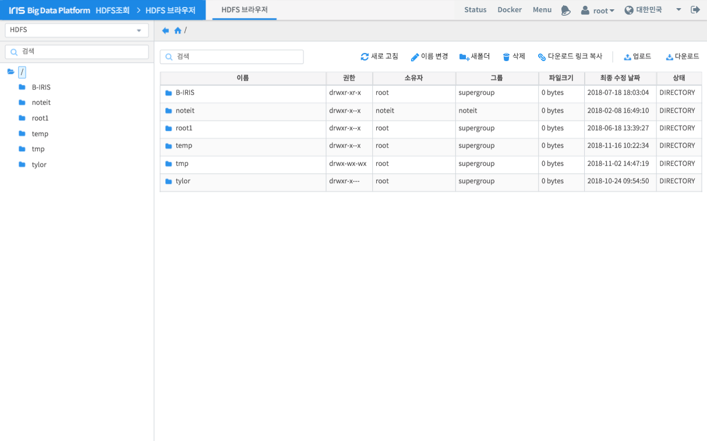

파일 탐색¶
HDFS 브라우저 기능은 HDFS를 사용자가 UI로 쉽게 사용하기 위한 목적으로 사용됩니다. 일반적으로 파일 브라우저들이 제공하는 기능들을 제공하고 있습니다.
| 번호 | 구분 | 설명 |
| 1 | 트리뷰 | 생성되어 있는 폴더를 트리 구조로 표시합니다. 특정 폴더를 더블 클릭하면 하위 폴더를 표시하거나, 해당 폴더에 내용을 11)파일 목록에 표시합니다. |
| 2 | 경로 표시 및 이동 | 현재 선택된 폴더의 경로를 표시하고, 버튼에 따라 이전 폴더 혹은 최상위 폴더로 이동합니다. |
| 3 | 검색 바 | 텍스트를 입력하여 목록에서 원하는 항목만 골라볼 수 있습니다. |
| 4 | 새로고침 | 클릭하면 11)목록의 내용을 갱신합니다. |
| 5 | 이름 변경 | 선택한 파일 혹은 폴더의 이름을 변경합니다. |
| 6 | 새 폴더 | 현재 경로에 새로운 폴더를 생성합니다. |
| 7 | 삭제 | 선택한 파일 혹은 폴더를 제거합니다. |
| 8 | 다운로드 링크 복사 | 선택한 파일의 다운로드 주소를 클립보드에 복사합니다. |
| 9 | 업로드 | 현재 경로에 사용자 로컬 PC의 파일을 업로드합니다. |
| 10 | 다운로드 | 선택한 파일을 사용자 로컬 PC로 다운로드합니다. |
| 11 | 파일 목록 | 현재 경로에 존재하는 파일 및 폴더 정보를 출력합니다. |